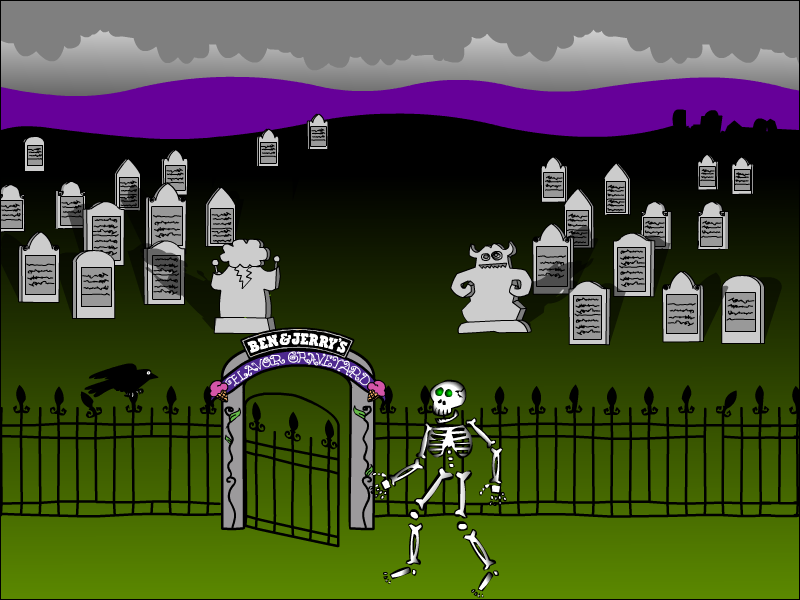
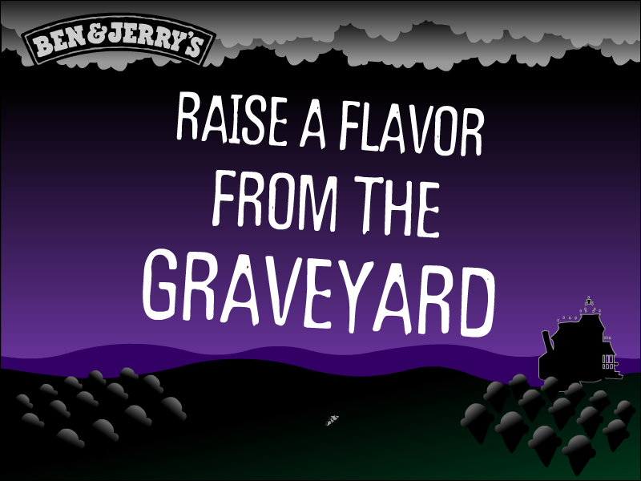
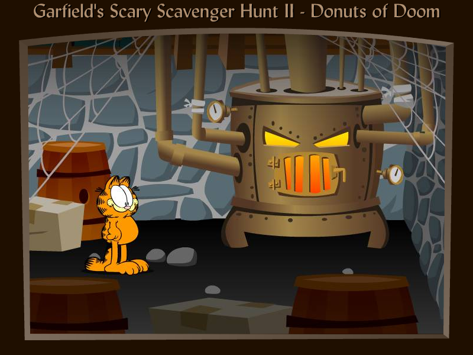
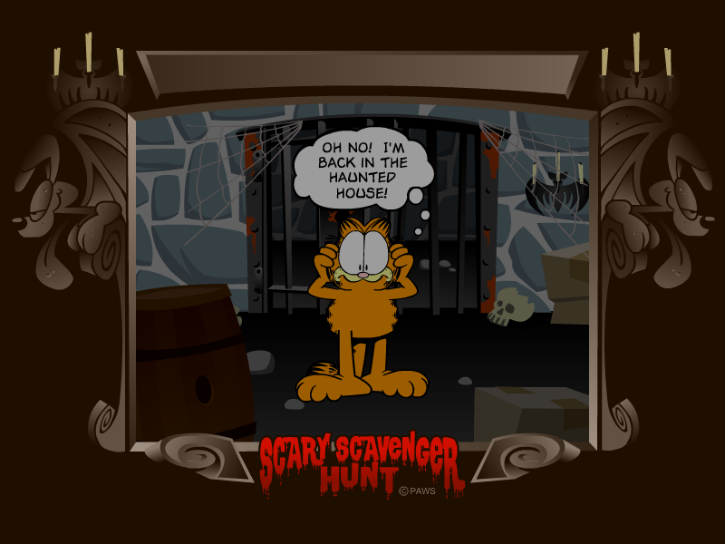
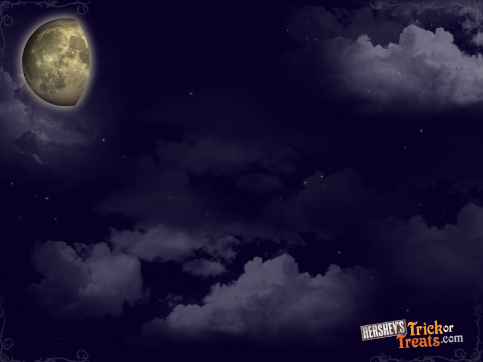
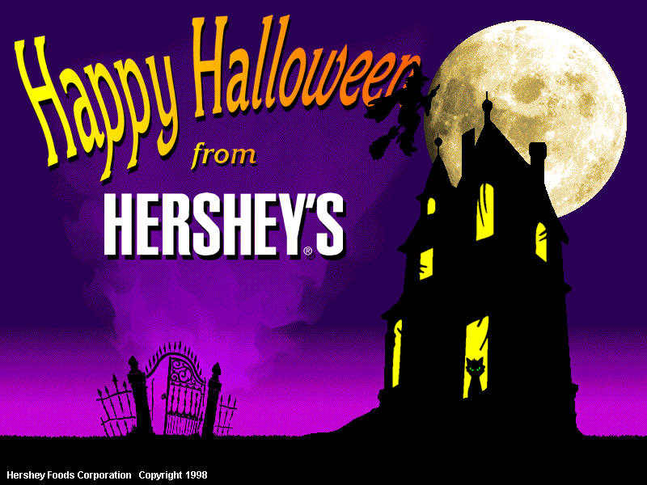
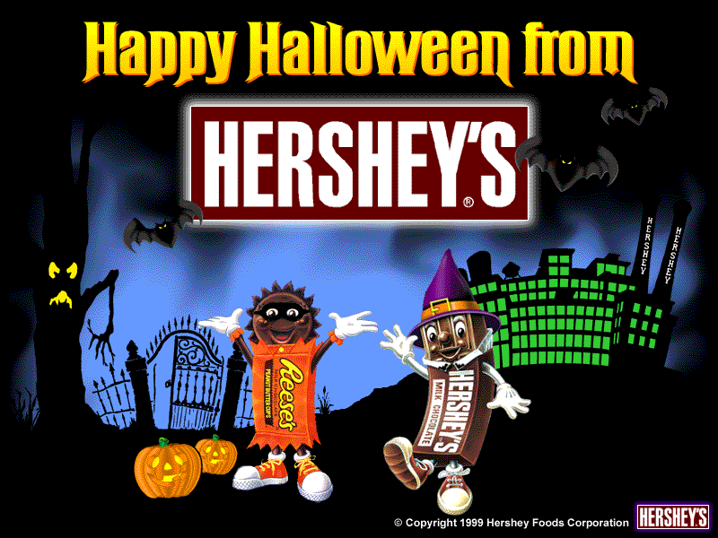
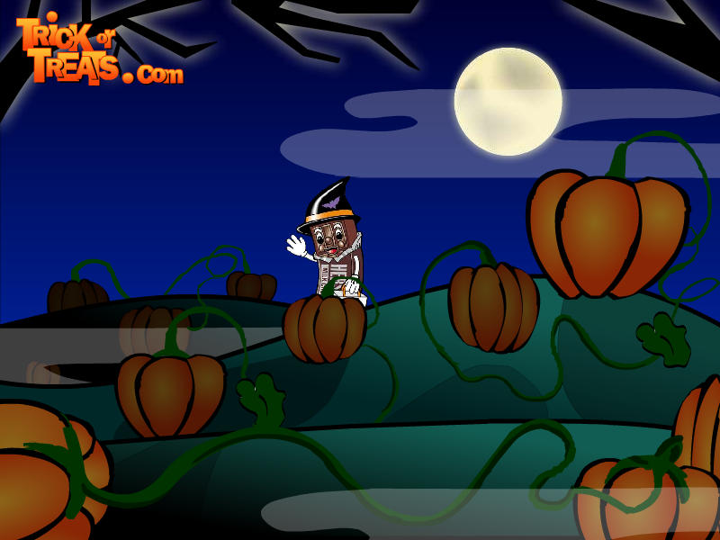
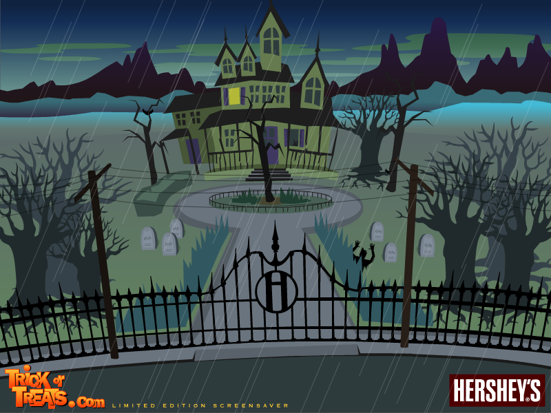
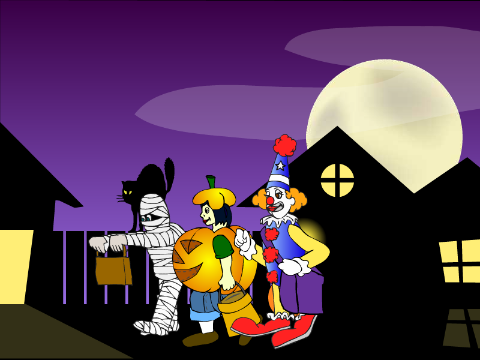

<!DOCTYPE html>
<html>
	<head>
		<title>Halloween Mix Screensavers - BrycesPix</title>
		<link rel="stylesheet" type="text/css" href="hallo.css">
		<link rel="icon" type="image/x-icon" href="faviconhallo.ico">
	<meta name="viewport" content="width=device-width, initial-scale=1.0"> 
	<script src="https://code.jquery.com/jquery-1.10.2.js"></script>
	</head>

	<body>
			<!--Navigation bar-->
			<div id="nav-placeholder">
			</div>

			<script>
			$(function(){
			  $("#nav-placeholder").load("nav.html");
			});
			</script>
			<!--end of Navigation bar-->
		<h1>Halloween Mix Screensavers</h1>
		<br><br>
		<h3>Ben & Jerry's</h3>
		<h4>Flavor Graveyard</h4>
		
		<h4>DOWNLOAD</h4>
		<a href="downloads/benjerry/BJgraveyard800_setup.zip">.exe file zipped (800 x 600) (0.99 MB)</a><br>
		<a href="downloads/benjerry/BJgraveyard1024_setup.zip">.exe file zipped (1024 x 768) (0.99 MB)</a><br>
		<a href="downloads/benjerry/BJgraveyard1280_setup.zip">.exe file zipped (1280 x 1024) (1.03 MB)</a><br>
		<br><br>
		<h4>Raise a Flavor</h4>
		
		<h4>DOWNLOAD</h4>
		<a href="downloads/benjerry/raise_screensaver_800.zip">.exe file zipped (Windows) (800 x 600) (0.97 MB)</a><br>
		<a href="downloads/benjerry/raise_screensaver_1024.zip">.exe file zipped (Windows) (1024 x 768) (0.97 MB)</a><br>
		<a href="downloads/benjerry/raise_screensaver_1280.zip">.exe file zipped (Windows) (1280 x 1024) (0.97 MB)</a><br>
		<a href="downloads/benjerry/raise_800_os9.sit">.sit file (Mac OS 9) (800 x 600) (877 KB)</a><br>
		<a href="downloads/benjerry/raise_1024_os9.sit">.sit file (Mac OS 9) (1024 x 768) (877 KB)</a><br>
		<a href="downloads/benjerry/raise_1280_os9.sit">.sit file (Mac OS 9) (1280 x 1024) (877 KB)</a><br>
		<a href="downloads/benjerry/raise_800_osX.sit">.sit file (Mac OS X) (800 x 600) (708 KB)</a><br>
		<a href="downloads/benjerry/raise_1024_osX.sit">.sit file (Mac OS X) (1024 x 768) (708 KB)</a><br>
		<a href="downloads/benjerry/raise_1280_osX.sit">.sit file (Mac OS X) (1280 x 1024) (708 KB)</a><br>
		<br><br>
		<h3>The Fairly OddParents</h3>
		<h4>Due fantagenitori Halloween Screensaver (nicktv.it)</h4>
		
		<h4>DOWNLOAD</h4>
		<a href="downloads/fop/it/2fantagenitori_house.zip">.exe file zipped (754 KB)</a><br>
		<br><br>
		<h3>Garfield</h3>
		<h4>Garfield's Scary Scavenger Hunt II - Donuts of Doom (Basic)</h4>
		
		<h4>Note: This screensaver will not properly run on versions of Windows before Windows Vista.</h4>
		<h3>DOWNLOAD</h3>
		<a href="downloads/garfield/SSH2Basic.zip">.exe file zipped (Windows) (1.33 MB)</a><br>
		<a href="downloads/garfield/SSH2BasicOS9.hqx">.hqx file (Mac OS 9) (3.59 MB)</a><br>
		<a href="downloads/garfield/SSH2BasicOSX.hqx">.hqx file (Mac OS X) (4.43 MB)</a><br>
		<br><br>
		<h4>Garfield's Scary Scavenger Hunt II - Donuts of Doom (Deluxe)</h4>
		
		<h4>Note: This screensaver will not properly run on versions of Windows before Windows Vista.</h4>
		<h3>DOWNLOAD</h3>
		<a href="downloads/garfield/SSH2Deluxe.zip">.exe file zipped (Windows) (982 KB)</a><br>
		<a href="downloads/garfield/SSH2DeluxeOS9.hqx">.hqx file (Mac OS 9) (2.02 MB)</a><br>
		<a href="downloads/garfield/SSH2DeluxeOSX.hqx">.hqx file (Mac OS X) (1.79 MB)</a><br>
		<br><br>
		<h3>Hershey's</h3>
		<h4>Trick or Treat</h4>
		
		<h4>DOWNLOAD</h4>
		<a href="downloads/hersheys/spooky-night_pc.zip">.exe file zipped (2.20 MB)</a><br>
		<br><br>
		<h4>Hershey's Halloween (1998)</h4>
		
		<h4>Note: This is a 16-bit program and requires special programs to run on 64-bit Windows, such as <a href="https://github.com/otya128/winevdm/releases/">otvdm</a>.<br><br>Note 2: This screensaver will not properly run on versions of Windows beyond Windows 2000.</h4>
		<h4>DOWNLOAD</h4>
		<a href="downloads/hersheys/HersheysHalloween.zip">.exe file zipped (0.99 MB)</a><br>
		<br><br>
		<h4>Hershey's Halloween (1999)</h4>
		
		<h4>Note: This is a 16-bit program and requires special programs to run on 64-bit Windows, such as <a href="https://github.com/otya128/winevdm/releases/">otvdm</a>.<br><br>Note 2: This screensaver will not properly run on versions of Windows beyond Windows 2000.</h4>
		<h4>DOWNLOAD</h4>
		<a href="downloads/hersheys/HersheysHalloween99.zip">.exe file zipped (1.63 MB)</a><br>
		<br><br>
		<h4>Pumpkin Patch</h4>
		
		<h4>DOWNLOAD</h4>
		<a href="downloads/hersheys/pumpkinpatch.zip">.exe file zipped (387 KB)</a><br>
		<br><br>
		<h4>Rainy Night</h4>
		
		<h4>DOWNLOAD</h4>
		<a href="downloads/hersheys/rainy-night.zip">.exe file zipped (1.03 MB)</a><br>
		<br><br>
		<h4>Trick or Treaters</h4>
		
		<h4>DOWNLOAD</h4>
		<a href="downloads/hersheys/trickortreaters.zip">.exe file zipped (369 KB)</a><br>
		<br><br>
		<h3>Mario</h3>
		<h4>Luigi's Mansion</h4>
		
		<h4>Note: This is a 16-bit program and requires special programs to install on 64-bit Windows, such as <a href="https://github.com/otya128/winevdm/releases/">otvdm</a>.</h4>
		<h4>DOWNLOAD</h4>
		<a href="lelegodlex/mario/lm/Luigi's Mansion - Screensaver PC.zip">.exe file zipped (Windows) (1.27 MB)</a><br>
		<a href="lelegodlex/mario/lm/[MAC] Luigi's Mansion Screensaver.sit">.sit file (Mac OS 9) (1.25 MB)</a><br>
		<br><br>
		<h3>SpongeBob SquarePants</h3>
		<h4>Creature from the Krusty Krab Screensaver</h4>
		
		<h4>DOWNLOAD</h4>
		<a href="lelegodlex/sb/vg/sb_ckk_pc.zip">.exe file zipped (1.95 MB)</a><br>
	</body>
</html>
